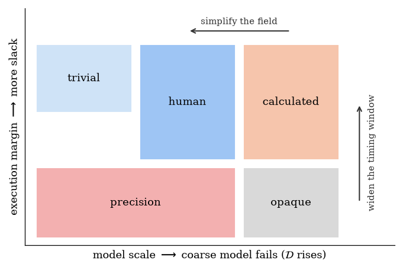
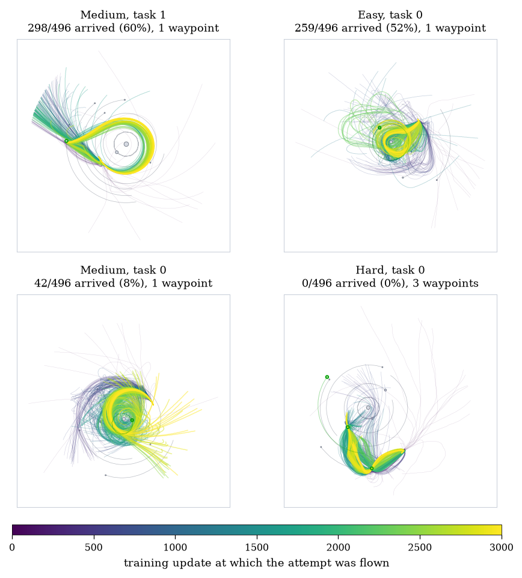
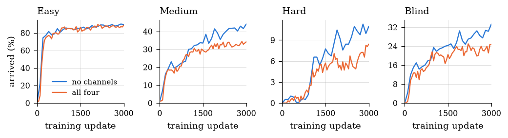

spacenav · sheet 1 of 2 · companion to the paper
N-Body Navigation
A craft with a small tank, in a field made by several bodies that are all moving, trying to reach targets that are moving too. The task is cheap to simulate and fully specified, and it is still hard to say which of its levels are hard, which are interesting, and which can be flown at all.
The task
Several bodies orbit one another under their own gravity; the craft feels all of them and moves none, so the field's whole future is fixed the moment the level is chosen. The craft has a heading, a throttle and a tank measured in seconds of burn, and it is asked to pass through a short tour of targets, some of which sit in free space and some of which ride on a body. One picture of a level, drawn below, holds most of what there is to know about the task; the three panels after it are the parts of it a learner actually touches.
- Star
Dominant mass. Every body attracts every other; the field is integrated with a leapfrog scheme at 1/60 s.
- Planet and moon
Bodies move visibly during an episode. Inside a body's radius the pull falls off linearly, so nothing is singular.
- Attached target
A target riding on a body carries the body's motion; the dashed arc is where it will be.
- The craft
Blue is heading, with the thrust vector; the pale arrow is velocity, the gold one local gravity. The tank is sized so gravity can never be ignored.
- Free-space target
Arrival radius 12 u. A rendezvous target also demands a relative speed under 3 u/s.
- Radiation belt
A hazard band. Damage accrues inside; enough of it ends the episode.
- Level radius
Dotted. Past 1.35 times it the craft is lost and the episode ends.
- Second planet
With a thin atmosphere ring: drag and heating for a craft that passes too close.
The observation is ego-centric and set-structured, so one network runs on a level with any number of bodies. A fixed block carries the craft's own state and the tour; each body and each hazard zone is one token, pooled by attention with the craft as the query.
The action set is what a person can press. Turn is arcade-style, with no angular inertia, and thrust is held constant across a control tick; a human player and the learner both act at 15 Hz.
Six endings, one of them a clock. The craft arrives, collides, is worn down by a hazard, runs dry with no coasting path left, drifts out of the level, or runs out of time at 150 s. Of these the clock is the least interesting, since a craft on a long, fuel-cheap path that the clock stops has not failed the task so much as a hyperparameter; section 04 returns to this.
Three ways to picture the problem
The rest of the sheet keeps returning to three pictures of the same task. Each is correct somewhere; which one a level calls for is most of what makes that level hard or easy, and none of them is visible from a single success rate.
A plain reinforcement-learning loop
Observe, act, be rewarded. This works until the craft enters a chaotic regime, and then it works only if the algorithm happens to tolerate what chaos does to the objective.
A state machine with noise filters
Chaotic regions are filters the craft passes through. Inside one the goal is not a precise prediction of the exit trajectory but a bound on it tight enough that adaptation on the far side is still possible.
Stackable strategies
- Conics — one body matters; the rest is a patched conic.
- Dead heading — point at the target and burn.
- Leading — aim where a moving target will be.
- Gravity assists — borrow velocity from a body on the way.
- Learned models — a representation of the field itself.
Each rung is a strategy that works on some levels and is a special case of the one above it. A learner climbs them, and a curriculum is a choice of which rung each level should reward.
Why a level of a given difficulty is hard to design
Given those three pictures, deciding whether a particular level is difficult, or interesting, is harder than it looks, and the difficulty is in the task rather than in any machinery used to measure it. Checking that a proposed solution is even correct is, in general, out of reach. The action is continuous in direction and magnitude, the horizon is T steps, and an exhaustive search is O(aT) with a continuous, so even a tiny level cannot be checked exhaustively without simplifying assumptions. Once a chaotic regime is entered the precision of the check itself becomes the problem: two actions that differ below the integrator's resolution can end in different places. [CITE: complexity of control and reachability; chaos and finite precision]
The quantities used
Each quantity below answers a question one of the three pictures raises. The representational ones ask whether a coarse model of the field is enough; the timing one asks whether a human could execute the answer; the chaos ones ask whether the field is actually chaotic on the episode's timescale rather than assumed to be; the last asks whether anyone can fly the level at all.
| Symbol | What it measures | Picture it serves | Form |
|---|---|---|---|
| η | The fraction of local gravity a one-body model discards. Peaks on the equal-pull surface, about half a Hill radius from a secondary. | c · is the conic rung enough? | closed form |
| A | Authority: the craft's available impulse against the impulse gravity delivers over the tour. | c · can thrust overrule the field? | closed form |
| D = η/A | The share of the tank a wrong model costs. Invertible, so a level can be generated to a target D. | c · representational difficulty | closed form |
| slack | Timing margin of the reference solution against human reaction limits. The trivial axis, kept separate. | a · execution, not understanding | from the optimiser |
| Tλ | Lyapunov time against the 150 s episode. The field is quasi-integrable on episode timescales; chaos has to be built. | b · is there a filter to pass? | measured |
| α | Uncertainty exponent of the winning set, and the Hölder threshold the objective must clear for gradient methods. | a, b · what chaos does to the reward | measured |
| solvable | Whether the reference optimiser can fly it. A level nobody can fly earns no label; the true optimum is never available. | all · the gate before any label | CEM planner |



What a single success rate hides
Every saved checkpoint of one training run flying one fixed level sixteen times, with the policy sampling its actions rather than taking the most likely one, so 496 attempts in all. Early policies spray across the field; late ones thread the same line. The number in an evaluation table is an average over exactly this.
Medium, task 1. All 496 attempts on one shared clock. The fleet thins as attempts end; 298 of them arrive.
Hard, task 0. A three-target tour, 496 attempts, no arrivals. The policy settles on a shuttle between the first two targets and never reaches the third.
Learning, as accumulation. The same level with attempts added in training order, so the corridor forms as you watch.

Results
The natural expectation is that a learner told its own difficulty would learn faster, so four physically meaningful readouts were added to the observation: η, the authority ratio, their quotient, and a local tidal stretching rate. The two that carry new information are indistinguishable from telling the learner nothing; the two that are algebraic combinations of things it already observes cost up to ten points of success, and the cost splits exactly on that line. Five training seeds per row, percentage of levels arrived.
| What the learner is told | Easy | Medium | Hard | Blind |
|---|---|---|---|---|
| nothing | 89.4 | 41.7 | 10.7 | 30.2 |
| η and stretch (new information) | 90.4 | 41.9 | 11.1 | 29.2 |
| budget and demand (redundant) | 86.6 | 33.2 | 6.2 | 22.7 |
| all four | 86.3 | 31.6 | 5.8 | 22.2 |


How to try it
- One repository. Environment, level generators, evaluation suites, trained policies and the analysis behind every figure: kevroy314/spaceship-navigator.
- Figures regenerate from committed measurements.
scripts/paper_figures.pyreads stored results rather than numbers typed into the source, so a claim and its figure cannot drift apart. - Pools are reproducible from seeds.
scripts/build_pools.pyrebuilds the 18,000-level training pool and the validation, holdout and long-horizon pools. - The reasoning is on the record. docs/decisions/ is a numbered, append-only series of design decisions with the measurement behind each.
- Fly it yourself. The browser client under
web/integrates the same physics from a level snapshot; sheet 2 replays the learner's attempts.